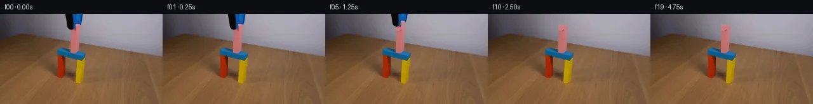

![首帧]()

Round 00
2026-11-05T09:25:15.882356+00:00像素候选变化代码 +192/−0inspection 更新
pixels 18e22dd02642edf0 · code 1da726d3c904672f
查看本轮 generate.py 真实 diff
--- previous/generate.py
+++ current/generate.py
@@ -0,0 +1,192 @@
+#!/usr/bin/env python3
+"""Generate a 20-frame locked-camera block-placement continuation.
+
+The supplied photograph is used directly. Only the grabber is segmented and
+translated; pixels revealed behind it are reconstructed analytically from the
+local wall and pink-block colors. No external renderer or model is used.
+"""
+
+from pathlib import Path
+
+import numpy as np
+from PIL import Image, ImageDraw, ImageFilter
+
+from artifact_io import save
+
+
+ROOT = Path(__file__).resolve().parent
+W, H = 256, 144
+
+
+def polygon_mask(points):
+ im = Image.new("L", (W, H), 0)
+ ImageDraw.Draw(im).polygon(points, fill=255)
+ return np.asarray(im) > 0
+
+
+def grabber_mask(src):
+ """Segment the dark body and blue jaw in their small known first-frame ROI."""
+ yy, xx = np.mgrid[:H, :W]
+ r = src[..., 0].astype(np.int16)
+ g = src[..., 1].astype(np.int16)
+ b = src[..., 2].astype(np.int16)
+
+ roi = (xx >= 101) & (xx <= 131) & (yy <= 28)
+ # Two material seeds: the near-black body and the saturated blue jaw.
+ dark = (r < 62) & (g < 70) & (b < 84)
+ blue = (b > 70) & (b > g + 25) & (b > r + 45)
+ seed = roi & (dark | blue)
+
+ # Restrict a two-pixel dilation to the measured silhouette. It collects
+ # anti-aliased edge pixels without eating into unrelated wall/pink areas.
+ allowed = polygon_mask(
+ [(101, 0), (130, 0), (130, 16), (127, 21), (121, 20),
+ (119, 25), (116, 28), (109, 26), (106, 22), (104, 11)]
+ )
+ dil = Image.fromarray((seed * 255).astype(np.uint8)).filter(
+ ImageFilter.MaxFilter(5)
+ )
+ mask = (np.asarray(dil) > 0) & allowed
+ return mask
+
+
+def reconstruct_revealed(src, mask):
+ """Create the fixed scene seen after the grabber leaves.
+
+ Above the pink block, a per-row interpolation between clean wall samples is
+ used. Where the grabber overlaps the block, visible pink pixels on the
+ right side of the same row are extrapolated left with the measured gentle
+ horizontal shading. The operation is limited to the segmented mask.
+ """
+ out = src.copy()
+ pink_shape = polygon_mask([(111, 17), (127, 19), (123, 63), (110, 60)])
+
+ ys, xs = np.where(mask)
+ for y, x in zip(ys.tolist(), xs.tolist()):
+ if pink_shape[y, x] and y >= 17:
+ # x=123..125 is visible pink in the overlap rows. Sample a robust
+ # local median and extend its small left-to-right illumination ramp.
+ sy = min(max(y, 18), 57)
+ candidates = []
+ for sx in range(120, 126):
+ c = src[sy, sx].astype(np.int16)
+ if c[0] > c[1] + 45 and c[0] > c[2] + 35:
+ candidates.append(c)
+ if candidates:
+ color = np.median(np.stack(candidates), axis=0)
+ else:
+ color = np.array([200, 121, 126], dtype=np.float64)
+ # The left face is a little darker/redder than the right face.
+ dx = x - 122
+ color = color + np.array([-0.35 * dx, -0.18 * dx, -0.12 * dx])
+ out[y, x] = np.clip(color, 0, 255).astype(np.uint8)
+ else:
+ # Interpolate clean gray-wall samples bracketing the tool. Both
+ # reference columns are outside its silhouette.
+ lx, rx = 96, 138
+ left = src[y, lx].astype(np.float64)
… diff truncated; 105 more lines …